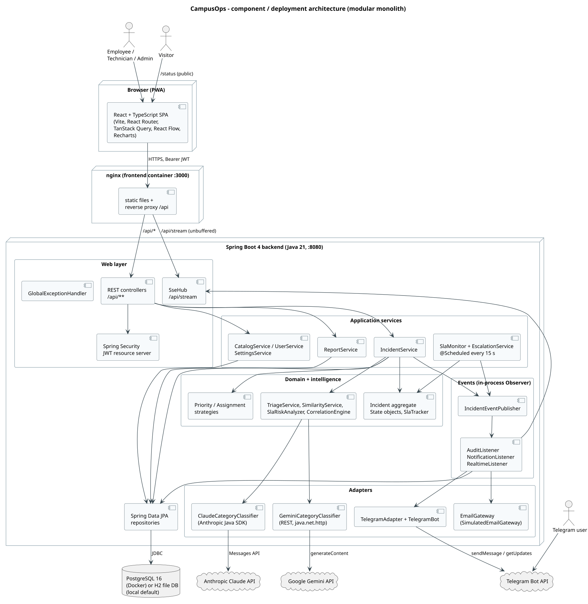
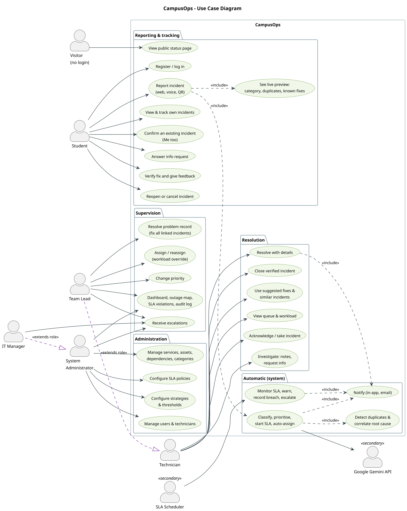
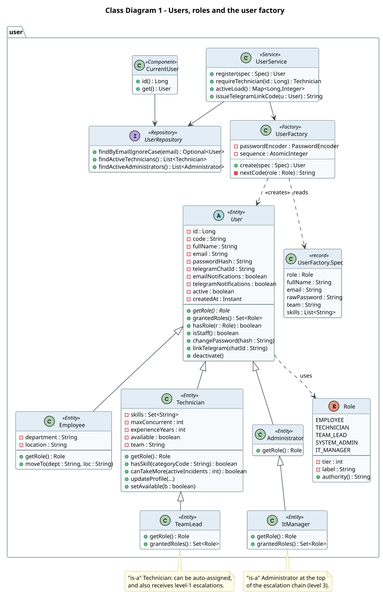
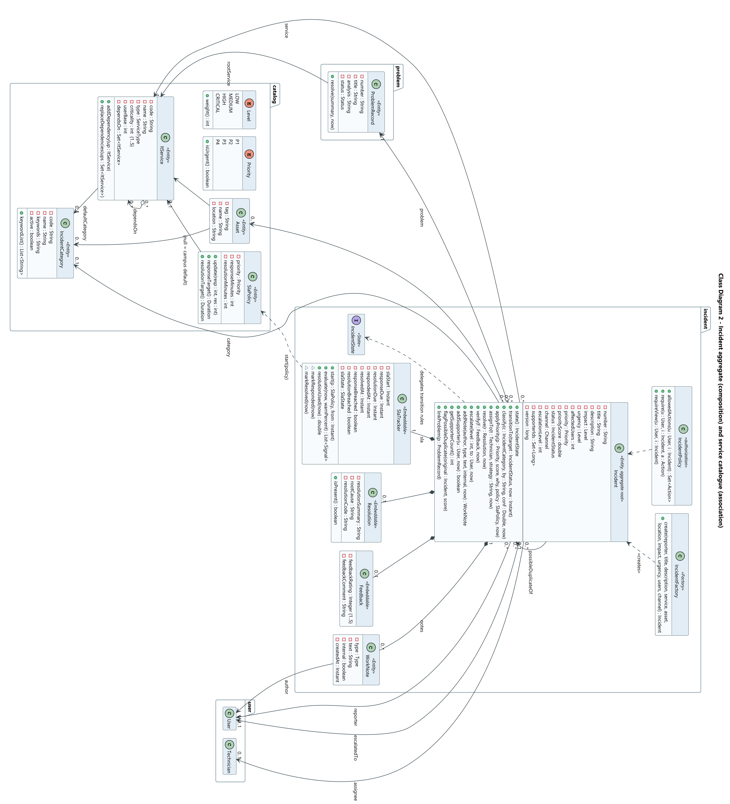
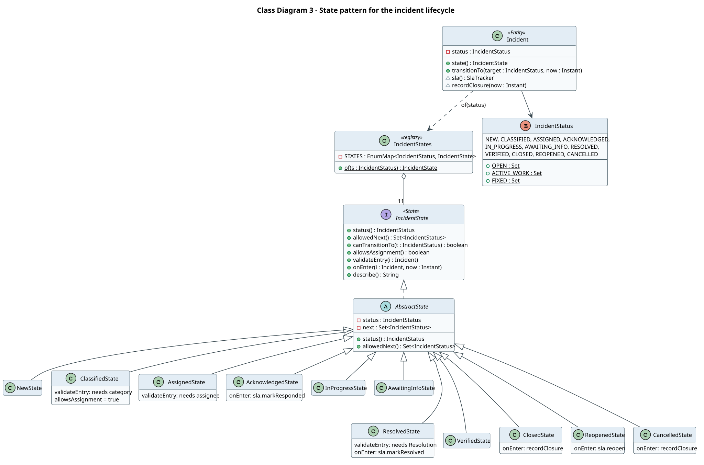
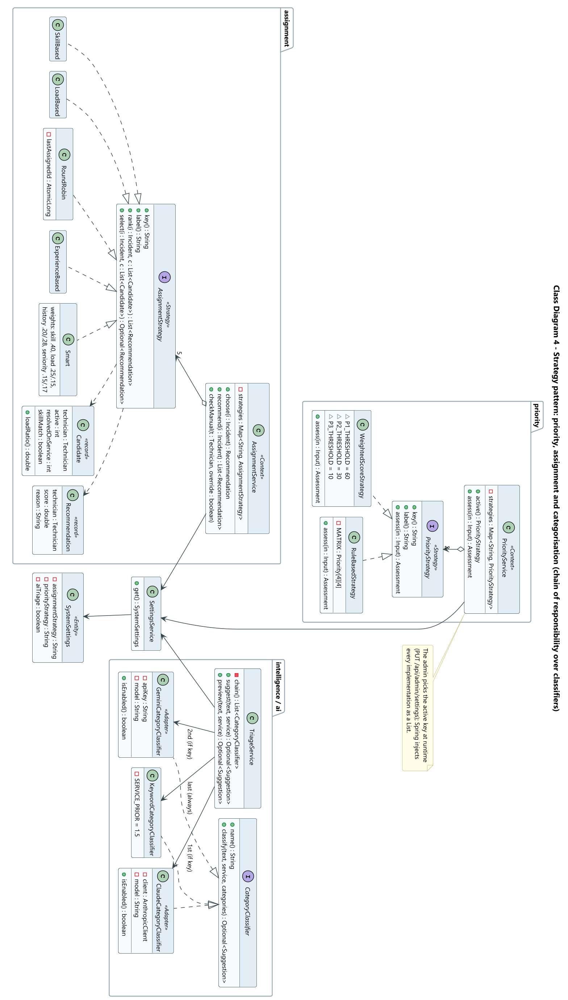
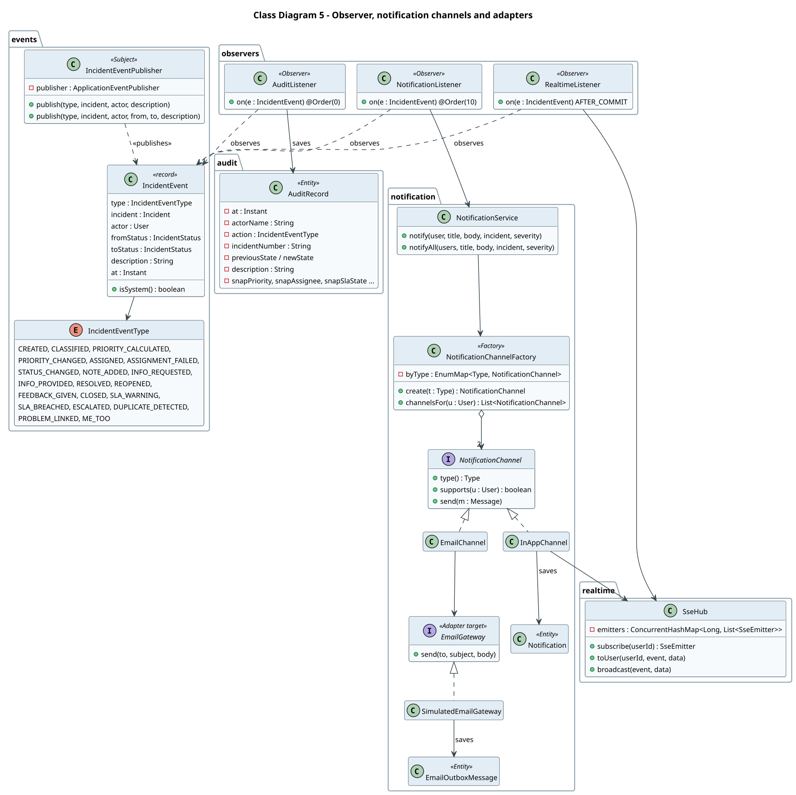
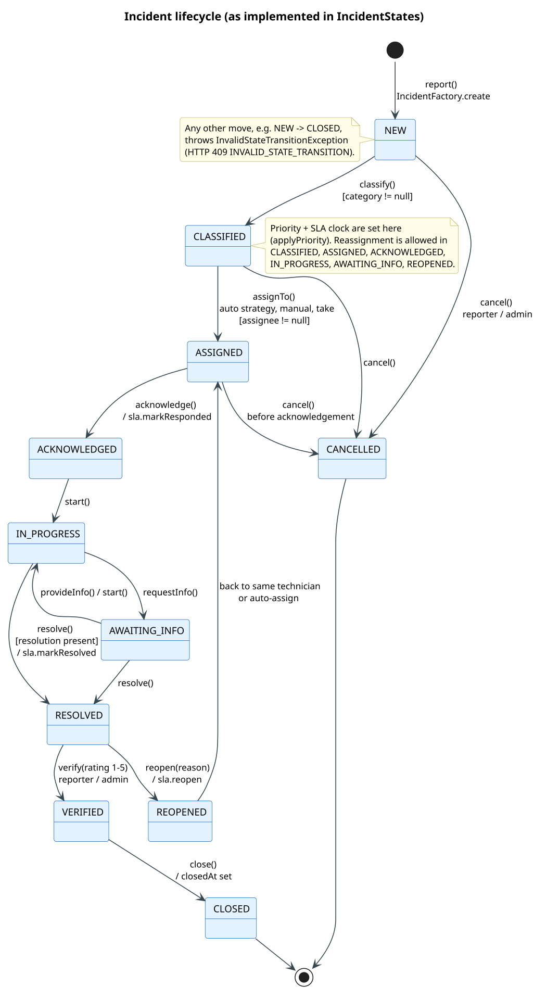
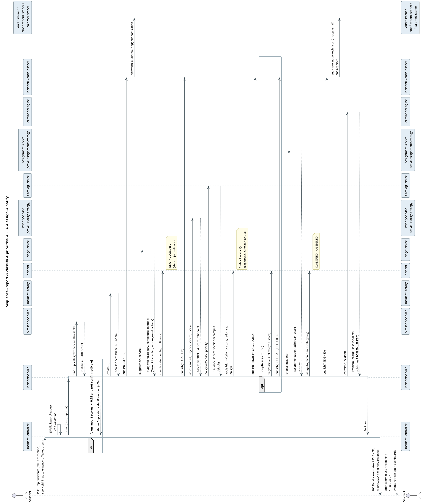
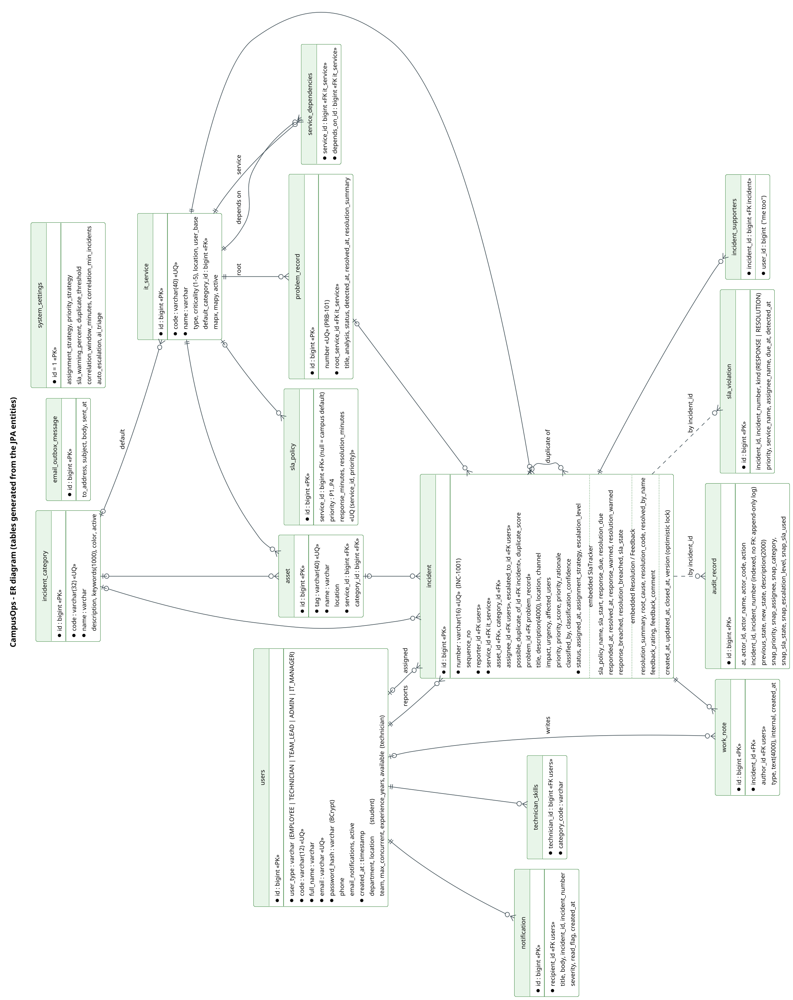

| Group | [Group No.] |
| Member 1 | [Member 1 name, ID] |
| Member 2 | [Member 2 name, ID] |
| Member 3 | [Member 3 name, ID] |
| Member 4 | [Member 4 name, ID] |
| Member 5 | [Member 5 name, ID] |
| Repository | [repository URL] |
| Demo video | [GroupNo]_OOP_S1_2025-2026_Project |
Notation. Class names are written in monospace exactly as they appear in the
source tree (backend/src/main/java/in/bits/campusops/...). Every number, threshold and formula in this report is
copied from the code, not from the brief. Where something is partial or only simulated we say so.
BITS Pilani, Hyderabad Campus runs a dense set of IT services: hostel Wi-Fi in every Bhavan, the Academic Blocks LAN (A, B+G, C, D+F and the LTC), the lab network and lab PCs in D+F Block, the Internet login (Sophos captive portal), the ERP, the CMS (Moodle), the SWD portal, BITS Mail, the campus SSO, the VPN, print stations and classroom AV. Almost all of it sits behind one Internet uplink, the Sophos firewall and web filter, and two core switches (one for the academic side, one for the hostels); CCIT's office is in B Block. When one of these fails, nobody can see how many people are affected, whether ten complaints are one fault, which technician is free, or whether an urgent issue has been sitting unacknowledged for an hour.
Before designing anything we read a semester of IT complaints on the BPHC Shoutbox Facebook group. They are summarised here in aggregate only (no individual is named) because they shaped both the problem statement and the seeded demo data:
The seeded history in CampusOps contains incidents modelled on these patterns ("YouTube lectures blocked on campus network", "Locked out after changing internet password", "Internet stops every evening", "Internet unusable in academic block during fest", "CMS app push notifications not arriving", "ERP timing out during add/swap"), and the demo has a "fest-load" scenario.
Related campus system. The Students' Union portal SU Connect (su.bits-hyderabad.ac.in) already handles general grievances (numbered GRV-YYYY-NNN and routed to SU positions) and lets students up-vote and down-vote them. It has no IT-specific priority, SLA, technician assignment or root-cause analysis. CampusOps is meant as the IT-specific counterpart: its "Me too" button borrows SU Connect's voting idea, and receiving IT grievances forwarded from SU Connect is listed as future work.
The brief asks for an Intelligent IT Service Management (I-ITSM) system that takes an incident through Report → Classify → Prioritise → Assign → Investigate → Resolve → Verify → Close and fixes the problems it lists: delayed response, wrong prioritisation, poor technician allocation, SLA violations, poor visibility, duplicate reports, incomplete history and recurring problems. We built CampusOps for that, modelled on our own campus.
| Stakeholder | Interest | Role in CampusOps |
|---|---|---|
| Students, faculty, office staff | Report a problem quickly (from a phone, by voice, by scanning a sticker or over Telegram), know that it was received, see progress, confirm the fix. | Employee |
| Support technicians (Network Ops, Apps & Data, Desktop Support) | A clear queue ordered by urgency, the context needed to start work, similar past fixes, a fair workload. | Technician |
| Team leads | See their team's load, reassign work, take escalations, fix one root cause behind many tickets. | TeamLead (a technician) |
| System administrator (CCIT) | Configure services, dependencies, SLAs, categories, users and strategies; watch SLA violations and the audit log. | Administrator |
| IT manager | Top of the escalation chain; campus-wide reports. | ItManager (an administrator) |
| Anyone on campus (no login) | Check whether a service is already known to be down before reporting it. | Public /status page |
| External services | Anthropic Claude API and Google Gemini API (category suggestion), Telegram Bot API (chat reporting and messages). | Secondary actors |
CampusOps is a full-stack web application (installable as a PWA) with a Spring Boot backend and a React frontend.
Its core is a rich Incident aggregate whose lifecycle is a State-pattern object graph. Around it:
IncidentEvent; observers write the audit trail, send notifications over in-app, (simulated) email and Telegram channels, and push live updates to open browsers over Server-Sent Events.@hyderabad.bits-pilani.ac.in address. Self-registration is only for employees/students; staff accounts are created by an administrator.Instant) and shown in IST (Asia/Kolkata). SLA clocks run 24x7 (no business-hours calendar).NETWORK, DATABASE); a team lead is also a working technician.DEMO_ENABLED=false.| ID | Requirement |
|---|---|
| FR-1 | Users log in with email and password; employees can self-register with a campus email. Admins create staff accounts, edit technician profiles (team, skills, capacity, experience, availability) and activate/deactivate users. |
| FR-2 | An employee reports an incident with title, description, affected service (or an asset tag from a QR sticker), optional category, impact, urgency, number of affected users and location, through web, voice, QR or Telegram. |
| FR-3 | While typing, the reporter sees a suggested category with confidence and reason, similar open incidents and known fixes from past incidents. |
| FR-4 | On submission the system creates the incident (INC-nnnn), classifies it, calculates priority, determines the SLA, checks for duplicates, assigns a technician, correlates it with other incidents and notifies the people involved. |
| FR-5 | Technicians see their queue, take unassigned incidents, acknowledge, start investigation, add internal or public notes, request information from the reporter, resolve with a summary, root cause and code, and close verified incidents. |
| FR-6 | Reporters see their incidents, answer information requests, add comments, verify the fix with a 1-5 rating and comment, reopen with a reason, or cancel before work starts. |
| FR-7 | Team leads and admins reassign (optionally overriding the workload limit), change priority with a reason, resolve a problem record (which walks every linked incident to RESOLVED), and see the dashboard, outage map, SLA violations and audit log. |
| FR-8 | Admins manage services (with dependency graph and map position), assets (QR stickers), categories (with keywords), SLA policies (campus default and per service) and runtime settings: assignment strategy, priority strategy, SLA warning %, duplicate threshold, correlation window and minimum, auto-escalation and AI triage switches. |
| FR-9 | A background job monitors SLA clocks, warns before deadlines, records violations and escalates. |
| FR-10 | Every important action is stored in an append-only audit trail with timestamp, actor, action, incident, previous state, new state, description and a snapshot of priority/assignee/category/SLA state, which drives a replay slider on the incident page. |
| FR-11 | Search incidents by free text/number, status, priority, category, service, technician, SLA state, date range, escalated-only, problem and open-only, with sorting and paging. |
| FR-12 | Reports: incident overview, technician workload, service analysis, category analysis, priority/status/channel breakdowns, 14-day trend and an at-risk list. |
| FR-13 | A public status page (no login) shows each service's health and known problems. |
| FR-14 | Telegram: link an account with a one-time 6-digit code, then /report, /status, /mine, /services; receive notifications in chat. |
| FR-15 | Any logged-in user can say "Me too" on an open incident they did not report. Each person counts once; the affected-user count becomes at least reporter + supporters and the priority is re-assessed (it can only rise automatically). |
| Quality | How CampusOps meets it |
|---|---|
| Maintainability / extensibility | New categories, services and SLA policies are data, not code. New priority/assignment strategies, notification channels and classifiers are one new class implementing an interface; Spring discovers it. |
| Reliability | Audit rows are written in the same transaction as the change (@Order(0) synchronous listener). A failing notification channel or AI call is caught and never breaks the workflow. Optimistic locking (@Version) on incidents. |
| Security | JWT authentication, BCrypt passwords, role-based @PreAuthorize, ownership checks, validation on all request DTOs, uniform JSON errors (Section 9). |
| Usability | Role-specific navigation, live updates over SSE, plain-language state descriptions, PWA install, voice input. |
| Performance | Indexed columns (status, createdAt, priority on incidents; incidentId, at on audit). Paged search (max 100 per page). TF-IDF only over the last 24 h of open incidents for duplicates. |
| Portability | Zero-setup H2 file database locally; PostgreSQL 16 with the postgres profile; one-command Docker Compose. |
| Testability | A single TimeProvider clock lets tests pin and advance time; strategies and state objects are plain classes unit-tested without Spring. |
| Role (class) | Main permissions (enforced by @PreAuthorize and IncidentPolicy) |
|---|---|
EMPLOYEE (Employee) | Report; view only own incidents; provide info; comment; verify / reopen / cancel own incidents; notifications; Telegram link. |
TECHNICIAN (Technician) | Everything an employee can do, plus: view all incidents, queue, dashboard, outage map, problems; take; acknowledge / start / request info / resolve / close when assigned; internal notes; set own availability. |
TEAM_LEAD (TeamLead, grants TECHNICIAN + TEAM_LEAD) | Technician rights on any incident, plus assign/reassign with override, change priority, resolve problem records, view audit log, SLA violations, settings (read), user list, edit technician profiles. |
SYSTEM_ADMIN (Administrator) | Supervisor rights plus catalogue, SLA, category, asset, user and settings management, email outbox, demo controls. |
IT_MANAGER (ItManager, grants SYSTEM_ADMIN + IT_MANAGER) | All admin rights; receives level-3 escalations. |
WeightedScoreStrategy)Impact and urgency use Level weights LOW = 1, MEDIUM = 2, HIGH = 3, CRITICAL = 4. Criticality is the affected
service's 1-5 business criticality. Reach grows slowly with the number of affected users (1 user = 1.0, 100 = 2.0, 1000 = 2.5),
so a big audience raises priority without swamping the other factors. The score is rounded to one decimal.
| Band | Score | Example from the code / seed |
|---|---|---|
| P1 Critical | ≥ 60 | Fee portal, HIGH × CRITICAL, criticality 5, 200 users: 3×4×5×2.15 = 129.0 (TC10) |
| P2 High | ≥ 30 | HIGH × CRITICAL, criticality 4, 1 user: 48.0 (TC12) |
| P3 Medium | ≥ 10 | Wi-Fi slow, MEDIUM × MEDIUM, criticality 4, 40 users: 16×1.80 = 28.8 |
| P4 Low | < 10 | Library printer, LOW × LOW, criticality 2, 10 users: 2×1.5 = 3.0 |
Alternative strategy RuleBasedStrategy (switchable at runtime): an ITIL impact × urgency matrix, then two business rules:
a criticality-5 service raises the result one level, and 500 or more affected users make it at least P2. Its score is
(4 − ordinal) × 25.
| Impact \ Urgency | LOW | MEDIUM | HIGH | CRITICAL |
|---|---|---|---|---|
| LOW | P4 | P4 | P3 | P3 |
| MEDIUM | P4 | P3 | P3 | P2 |
| HIGH | P3 | P3 | P2 | P1 |
| CRITICAL | P3 | P2 | P1 | P1 |
Rationale: the brief's suggested Impact × Urgency × Criticality product is kept as the core, and the number of affected users is added as a dampened multiplier so the brief's factor list (impact, urgency, business criticality, number of affected users, affected service) is fully covered. The rationale string is stored on the incident and shown to staff, e.g. "HIGH impact (3) x HIGH urgency (3) x criticality 5 of CMS (Moodle LMS) x reach 2.09 for 150 users = 94.0 -> P1". A supervisor can reassess impact/urgency/users with a reason; the SLA deadlines are then recomputed from the original SLA start. "Me too" confirmations raise the affected-user count; if the active strategy then gives a higher priority, it is applied automatically ("Raised automatically after N me-too reports"). Priority is never lowered automatically.
| Scope | Priority | Response target | Resolution target |
|---|---|---|---|
| Campus default | P1 | 5 min | 30 min |
| Campus default | P2 | 15 min | 2 h |
| Campus default | P3 | 1 h | 8 h |
| Campus default | P4 | 4 h | 24 h |
| Fee Payment Portal | P1 | 5 min | 20 min |
| ERP Portal | P2 | 10 min | 90 min |
CatalogService.policyFor picks the service-specific policy if it exists, otherwise the campus default; if neither exists it throws MissingSlaConfigurationException (422). During reporting this is caught and recorded as a warning in the audit trail so the incident is still created.SlaPolicy.update). Campus defaults can be edited but not deleted.SlaTracker states: ON_TRACK → AT_RISK (a warning fired) → BREACHED; MET once resolved in time. A warning fires once when the used fraction of a window reaches the configured percentage (default 75 %); a breach fires once after the deadline. Response is met at ACKNOWLEDGED, resolution at RESOLVED; reopening clears the resolved time so the clock resumes.| From | Allowed next | Guard / side effect |
|---|---|---|
| NEW | CLASSIFIED, CANCELLED | CLASSIFIED requires a category. |
| CLASSIFIED | ASSIGNED, CANCELLED | ASSIGNED requires an assignee. |
| ASSIGNED | ACKNOWLEDGED | Entering ACKNOWLEDGED stamps the response time. |
| ACKNOWLEDGED | IN_PROGRESS | |
| IN_PROGRESS | AWAITING_INFO, RESOLVED | RESOLVED requires a non-blank resolution summary; stamps resolution time. |
| AWAITING_INFO | IN_PROGRESS, RESOLVED | |
| RESOLVED | VERIFIED, REOPENED | VERIFIED stores a 1-5 rating. REOPENED clears the resolved time. |
| VERIFIED | CLOSED | CLOSED stamps closedAt. |
| REOPENED | ASSIGNED | Goes back to the same technician if still available, else auto-assign. |
| CLOSED, CANCELLED | none | Terminal. Any other move throws InvalidStateTransitionException (409). |
Who may trigger each action is checked separately by IncidentPolicy: acknowledge/start/request-info/resolve
by the assignee or a supervisor (team lead or admin); provide-info by the reporter; verify/reopen/cancel by the reporter or an
admin; close by the assignee or a supervisor; assign/change priority by supervisors; take by any technician who is not already
the assignee; notes by the reporter or any staff member. Reassignment is allowed in CLASSIFIED, ASSIGNED, ACKNOWLEDGED,
IN_PROGRESS, AWAITING_INFO and REOPENED. A manual assignment is refused if the technician is inactive or unavailable
(TechnicianUnavailableException) or already at maxConcurrent active incidents
(WorkloadExceededException) unless the supervisor sets override.
EscalationService)Chain: level 0 Technician → 1 Team Lead → 2 System Administrator → 3 IT Manager. Levels only go up.
ESCALATED event, an audit row and a CRITICAL notification. Auto-escalation can be switched off in settings.SimilarityService.findDuplicates)possibleDuplicateOf, duplicateScore) and a DUPLICATE_DETECTED event is raised; up to 5 are shown.DuplicateIncidentException (409) unless the user confirms it is a different problem (confirmedNew).Incident.addSupporter, IncidentService.meToo, POST /api/incidents/{id}/me-too):
the reporter cannot "me too" their own incident and a closed incident cannot be confirmed (both 409 INVALID_STATE_TRANSITION);
a second click by the same person changes nothing (supporters are a set of user ids); affected users = max(current estimate,
reporter + supporters); a ME_TOO event is audited and the priority is re-assessed.CorrelationEngine)ProblemRecord already explains the new incident (its root is the
incident's service or upstream of it, and it already holds incidents of the same category), the incident is simply linked to it.
If several qualify, the most specific root (smallest blast radius) wins.correlationMinIncidents) and either they are spread over ≥ 2 services
with no single service holding more than half, or they pile up on one service with at least minimum + 2 incidents.PRB-1xx) is created; the explained incidents
are linked and leads/admins get a "Possible root cause found" notification.
Clients. A React + TypeScript single-page app (installable PWA) serves every role with different navigation;
the public /status page needs no login. Telegram users talk to the same backend through the bot.
Edge. In Docker the SPA is served by nginx, which also reverse-proxies /api to the backend and passes
/api/stream unbuffered for Server-Sent Events. In development Vite proxies /api to port 8080.
Backend. One Spring Boot application organised by business capability, not by technical layer:
user, auth, catalog, incident, priority, assignment,
sla, intelligence, ai, problem, events, audit,
notification, realtime, telegram, report, settings,
demo, seed, common. Inside each, controllers are thin (validate, resolve the current user,
call a service, map to a view record); services orchestrate; the rules live in domain objects (Incident, its state
objects, SlaTracker, SlaPolicy, Technician), strategies and the policy.
Persistence. Spring Data JPA repositories over H2 (default, file-based) or PostgreSQL 16 (Docker / postgres profile).
Integrations. Each external system sits behind an adapter: ClaudeCategoryClassifier (official Anthropic Java SDK),
GeminiCategoryClassifier (Google Gemini REST API, generateContent),
TelegramAdapter (Telegram Bot HTTP API via java.net.http.HttpClient) and EmailGateway
(simulated outbox).
Services never call the audit or notification code directly. They publish an IncidentEvent through
IncidentEventPublisher (Spring's ApplicationEventPublisher) and three observers react:
AuditListener (@EventListener @Order(0)) runs synchronously inside the same transaction, so a change and its audit row commit or roll back together: the history cannot disagree with the data.NotificationListener (@Order(10)) decides who hears about what and fans out over every channel that applies to the recipient. Channel failures are logged and swallowed.RealtimeListener (@TransactionalEventListener(AFTER_COMMIT)) broadcasts a small "incident changed" message over SSE only after the commit, so browsers never refetch uncommitted data.Background work runs on Spring's scheduler: SlaMonitor (every 15 s), TelegramBot.poll (every 3 s) and an SSE heartbeat (every 25 s).
We considered splitting incidents, notifications, intelligence and SLA monitoring into services and decided against it for now:
All diagrams are PlantUML sources in docs/uml/*.puml, rendered to SVG and PNG. They were drawn from the code,
so names, attributes and multiplicities match the classes. The architecture diagram is in Section 3 and the ER diagram in
Section 8. Wide diagrams are printed on landscape pages; the SVG files in docs/uml/ can be zoomed without loss.








Incident has no public setters. Its state changes only through intention-revealing methods
(classify, applyPriority, assignTo, resolve, verify,
escalate), and every status change funnels through one method that consults the state object. Collections are
returned read-only, and the hooks the state objects need (sla(), recordClosure()) are package-private.
// incident/Incident.java public void transitionTo(IncidentStatus target, Instant now) { IncidentState current = state(); if (!current.canTransitionTo(target)) { ... throw new InvalidStateTransitionException( number + " cannot move from " + status + " to " + target + ". Allowed next: " + allowed); } IncidentState next = IncidentStates.of(target); next.validateEntry(this); this.status = target; this.updatedAt = now; next.onEnter(this, now); } public List<WorkNote> getNotes() { return Collections.unmodifiableList(notes); } SlaTracker sla() { return sla; } // package-private: only state objects use it
The same idea appears in Technician.getSkills() (unmodifiable set), SlaPolicy.update() (validates
before assigning) and UserView, which never exposes the password hash.
Complex operations are hidden behind small abstractions. User is abstract and declares what every kind of user
must answer; CampusOpsException is abstract and makes every business error say its own HTTP status and code, so the
global handler is one generic method. Callers of SlaTracker.evaluate(now, warnPercent) get back a list of signals and
never see the deadline arithmetic.
// common/CampusOpsException.java public abstract class CampusOpsException extends RuntimeException { public abstract HttpStatus status(); public abstract String code(); } // user/User.java public abstract class User { public abstract Role getRole(); public Set<Role> grantedRoles() { return EnumSet.of(getRole()); } public boolean isStaff() { return getRole().tier() >= Role.TECHNICIAN.tier(); } }
Inheritance is used only for real "is-a" relations: an Employee, Technician and
Administrator are users; a TeamLead is a technician (gets auto-assigned work and has skills) who also
supervises; an ItManager is an administrator at the top of the chain. JPA maps the hierarchy to one table with a
user_type discriminator. Exceptions form a second hierarchy (e.g. ServiceNotFoundException extends
ResourceNotFoundException, overriding only its code). The eleven state classes extend AbstractState, which
holds the shared transition table. Where "is-a" did not hold we used composition instead (an incident has an SLA tracker).
// user/TeamLead.java
@Entity @DiscriminatorValue("TEAM_LEAD")
public class TeamLead extends Technician {
@Override public Role getRole() { return Role.TEAM_LEAD; }
@Override public Set<Role> grantedRoles() { return EnumSet.of(Role.TECHNICIAN, Role.TEAM_LEAD); }
}
The same call does different things depending on the runtime object. AssignmentService.choose calls
select on whichever AssignmentStrategy the admin chose; NotificationService calls
send on each NotificationChannel; Incident.transitionTo calls validateEntry
and onEnter on whichever state object it is entering; JwtService puts user.grantedRoles()
into the token, which a TeamLead overrides.
// notification/NotificationService.java for (NotificationChannel channel : factory.channelsFor(recipient)) { try { channel.send(message); // InApp, Email or Telegram: dynamic dispatch } catch (RuntimeException ex) { log.warn("{} notification to {} failed: {}", channel.type(), recipient.getCode(), ex.getMessage()); } }
Contracts are interfaces: IncidentState, PriorityStrategy, AssignmentStrategy,
CategoryClassifier, NotificationChannel, EmailGateway and every repository. Default
methods carry shared behaviour (IncidentState.canTransitionTo, AssignmentStrategy.select).
// notification/NotificationChannel.java public interface NotificationChannel { enum Type { IN_APP, EMAIL, TELEGRAM } record Message(User recipient, String title, String body, Long incidentId, String incidentNumber, Notification.Severity severity) { } Type type(); boolean supports(User user); // linked account, user preferences void send(Message message); }
An incident is composed of parts that have no meaning on their own: SlaTracker, Resolution and
Feedback are @Embeddable value objects stored in the incident row, and WorkNotes are owned
with cascade = ALL, orphanRemoval = true. Notes can only be created through Incident.addNote
(the WorkNote constructor is package-private).
// incident/Incident.java
@Embedded private SlaTracker sla = new SlaTracker();
@Embedded private Resolution resolution;
@Embedded private Feedback feedback;
@OneToMany(mappedBy = "incident", cascade = CascadeType.ALL, orphanRemoval = true)
@OrderBy("createdAt ASC")
private List<WorkNote> notes = new ArrayList<>();
Associations connect independent objects: an incident refers to its reporter (User), assignee
(Technician), ItService, IncidentCategory and optional Asset, all
@ManyToOne; deleting an incident does not delete any of them. Aggregation: a ProblemRecord groups
incidents it does not own (Incident.linkProblem), and an ItService aggregates the services it depends on
(@ManyToMany dependsOn), forming the dependency graph. A self-association marks possibleDuplicateOf.
// catalog/ItService.java
@ManyToMany(fetch = FetchType.EAGER)
@JoinTable(name = "service_dependencies",
joinColumns = @JoinColumn(name = "service_id"),
inverseJoinColumns = @JoinColumn(name = "depends_on_id"))
private Set<ItService> dependsOn = new HashSet<>();
A custom unchecked hierarchy rooted at CampusOpsException covers every case the brief lists. A single
@RestControllerAdvice turns any of them into a uniform JSON ApiError (status, code, message, path,
timestamp, field errors). Validation errors, unreadable bodies, Spring Security denials, database failures and unexpected errors
get their own handlers so no stack trace reaches the client.
| Brief's situation | Exception / mechanism | HTTP / code |
|---|---|---|
| Invalid login | InvalidLoginException | 401 INVALID_LOGIN |
| Unauthorized operation | UnauthorizedOperationException, AccessDeniedException handler | 403 UNAUTHORIZED_OPERATION |
| Invalid incident / invalid input | InvalidInputException, Bean Validation (MethodArgumentNotValidException) | 400 INVALID_INPUT (+ fieldErrors) |
| Invalid state transition (also: "Me too" on your own or a closed incident) | InvalidStateTransitionException | 409 INVALID_STATE_TRANSITION |
| Technician unavailable | TechnicianUnavailableException (auto-assign catches it and leaves the incident queued) | 409 TECHNICIAN_UNAVAILABLE |
| Technician workload exceeded | WorkloadExceededException | 409 WORKLOAD_EXCEEDED |
| Service not found | ServiceNotFoundException (subclass of ResourceNotFoundException) | 404 SERVICE_NOT_FOUND |
| Missing SLA configuration | MissingSlaConfigurationException | 422 MISSING_SLA_CONFIGURATION |
| Duplicate incident | DuplicateIncidentException (carries the existing number) | 409 DUPLICATE_INCIDENT |
| Database failure | DataAccessException handler | 503 DATABASE_FAILURE |
| Network failure (Claude, Gemini, Telegram, channels) | Caught inside the adapters / NotificationService; the AI chain falls through to keywords (TC40); ExternalServiceException (502) is defined for future synchronous calls | workflow continues |
// common/GlobalExceptionHandler.java
@ExceptionHandler(CampusOpsException.class)
public ResponseEntity<ApiError> business(CampusOpsException ex, HttpServletRequest req) {
return build(ex.status(), ex.code(), ex.getMessage(), req, Map.of());
}
Domain value objects throw IllegalArgumentException for broken invariants (e.g. new Feedback(6, ..));
services translate these into InvalidInputException so the domain stays free of HTTP concerns.
| Structure | Where | Why this one |
|---|---|---|
EnumMap<IncidentStatus, IncidentState> | IncidentStates | Array-backed O(1) lookup of the state object for a status; keys are a closed enum. |
EnumSet | allowed transitions, IncidentStatus.OPEN/ACTIVE_WORK/FIXED, roles | Bit-vector sets: fast contains, ordered, compact. |
EnumMap<Type, NotificationChannel> | NotificationChannelFactory | One channel per type, predictable order. |
ArrayDeque + LinkedHashSet (BFS) | CatalogService.downstreamOf / upstreamOf | Breadth-first traversal of the dependency graph; the set doubles as "visited" and keeps a stable order. |
HashMap<String, Double> sparse vectors | TextAnalyzer.Corpus | TF-IDF vectors are sparse; cosine iterates only shared terms. |
ConcurrentHashMap<Long, CopyOnWriteArrayList<SseEmitter>> | SseHub | Many request threads subscribe while the scheduler broadcasts; copy-on-write suits rare writes and frequent iteration. |
Set<Long> (@ElementCollection) | Incident.supporterIds | "Me too" must count each person once; Set.add returning false is exactly the "already confirmed" check. |
LinkedHashMap | NotificationService.notifyAll | De-duplicates recipients by id while preserving order (a reporter who is also an admin is notified once). |
AtomicInteger / AtomicLong | incident and user number sequences, round-robin cursor | Thread-safe counters without locks. |
Sorted List + median | SlaRiskAnalyzer | Median fix time per (category, priority), robust to outliers; cached for 5 min in a volatile map. |
Java records | views, commands, Candidate, Recommendation, IncidentEvent | Immutable data carriers with value semantics. |
Classes: IncidentState (interface), IncidentStates.AbstractState and eleven concrete states
(NewState ... CancelledState), registry IncidentStates, context Incident.
Each state knows its allowed next states, whether assignment is allowed, the precondition for entering it and the side effect
of entering it. Adding a state (e.g. ON_HOLD) means one class plus an enum constant; nothing in the services changes.
// incident/IncidentStates.java
static final class ResolvedState extends AbstractState {
ResolvedState() { super(IncidentStatus.RESOLVED, EnumSet.of(IncidentStatus.VERIFIED, IncidentStatus.REOPENED)); }
@Override public void validateEntry(Incident incident) {
if (incident.getResolution() == null || !incident.getResolution().isPresent()) {
throw new InvalidStateTransitionException("Add resolution details before resolving");
}
}
@Override public void onEnter(Incident incident, Instant now) { incident.sla().markResolved(now); }
@Override public String describe() { return "Fixed, waiting for the reporter to confirm"; }
}
Classes: PriorityStrategy → WeightedScoreStrategy, RuleBasedStrategy;
AssignmentStrategy → Strategies.SkillBased, LoadBased, RoundRobin,
ExperienceBased, Smart; contexts PriorityService and AssignmentService.
Spring injects every implementation as a list; the context indexes them by key() and picks the one named in
SystemSettings, so the admin switches strategy at runtime with no redeploy. CategoryClassifier is a
third family (ClaudeCategoryClassifier, GeminiCategoryClassifier, KeywordCategoryClassifier), which
TriageService runs as a chain of responsibility: each classifier either answers or returns empty and the next one is asked.
// assignment/AssignmentService.java public AssignmentService(List<AssignmentStrategy> strategies, SettingsService settings, ...) { this.strategies = strategies.stream() .collect(Collectors.toMap(AssignmentStrategy::key, Function.identity())); } public Recommendation choose(Incident incident) { AssignmentStrategy strategy = active(); // from settings, e.g. "SKILL_BASED" return strategy.select(incident, candidates(incident, true)) .orElseThrow(() -> new TechnicianUnavailableException( "No available technician can take " + incident.getNumber() + " right now; it stays queued")); }
Subject: IncidentEventPublisher publishing IncidentEvent records (20 event types).
Observers: AuditListener, NotificationListener, RealtimeController.RealtimeListener.
IncidentService, SlaMonitor, EscalationService and CorrelationEngine publish
without knowing who listens; adding, say, a metrics observer is one new class.
// audit/AuditListener.java
@EventListener
@Order(0)
public void on(IncidentEvent event) {
Incident i = event.incident();
User actor = event.actor();
audit.save(new AuditRecord(event.at(), actor == null ? null : actor.getId(),
actor == null ? "CampusOps (automatic)" : actor.getFullName(), ...,
event.type(), i.getId(), i.getNumber(), event.fromStatus(), event.toStatus(), event.description(), ...));
}
UserFactory is the only place that decides which User subclass to build for a role, hashes the
password and assigns the readable code (E/T/L/A/M + number). IncidentFactory validates raw report input and builds
a NEW incident with the next INC-nnnn number. NotificationChannelFactory hands out the channel objects
that apply to a recipient.
// user/UserFactory.java
return switch (spec.role()) {
case EMPLOYEE -> new Employee(code, spec.fullName(), spec.email(), hash, now, spec.department(), spec.location());
case TECHNICIAN -> new Technician(code, spec.fullName(), spec.email(), hash, now, spec.team(), skills, max, exp);
case TEAM_LEAD -> new TeamLead(code, spec.fullName(), spec.email(), hash, now, spec.team(), skills, max, exp);
case SYSTEM_ADMIN -> new Administrator(code, spec.fullName(), spec.email(), hash, now);
case IT_MANAGER -> new ItManager(code, spec.fullName(), spec.email(), hash, now);
};
ClaudeCategoryClassifier adapts the Anthropic Java SDK (MessageCreateParams, JSON reply parsing) and
GeminiCategoryClassifier adapts the Google Gemini REST API (POST /v1beta/models/{model}:generateContent with an
x-goog-api-key header and JSON response mode) to the same CategoryClassifier interface; any failure, HTTP error,
refusal or unknown category returns Optional.empty() and TriageService moves to the next classifier. TelegramAdapter hides the Telegram Bot HTTP API behind
sendMessage and getUpdates. EmailGateway is the target interface for outgoing mail;
SimulatedEmailGateway stores messages in an outbox, and an SMTP or SendGrid adapter can replace it without touching
EmailChannel.
// ai/ClaudeCategoryClassifier.java (abridged)
MessageCreateParams params = MessageCreateParams.builder()
.model(model).maxTokens(1024L)
.outputConfig(OutputConfig.builder().effort(OutputConfig.Effort.LOW).build())
.addUserMessage(prompt).build();
Message response = client.messages().create(params);
...
return categories.stream().filter(c -> c.getCode().equals(code)).findFirst()
.map(c -> new Suggestion(c, Math.round(confidence * 100) / 100.0, name(), reason));
Every aggregate has a Spring Data repository interface (IncidentRepository, UserRepository,
CatalogRepositories.*, AuditRepository, ProblemRepository, ...). Services depend on these
interfaces, never on SQL. Search uses the Specification pattern on top (IncidentSpecifications.matching) to build
the query from whichever filters are present.
// incident/IncidentRepository.java
public interface IncidentRepository extends JpaRepository<Incident, Long>, JpaSpecificationExecutor<Incident> {
Optional<Incident> findByNumberIgnoreCase(String number);
List<Incident> findByStatusInAndCreatedAtAfter(Collection<IncidentStatus> statuses, Instant after);
@Query("select i.assignee.id, count(i) from Incident i where i.assignee is not null and i.status in :statuses "
+ "group by i.assignee.id")
List<Object[]> countByAssignee(@Param("statuses") Collection<IncidentStatus> statuses);
}
Other patterns used in passing: Specification (search filters), Policy object
(IncidentPolicy keeps "is this person allowed" apart from "does the state allow it"), Registry
(IncidentStates) and Clock abstraction (TimeProvider, which makes time testable and powers the
demo time warp).
| Layer | Technology (version from pom.xml / package.json) |
|---|---|
| Language | Java 21 (backend), TypeScript ~7.0 (frontend) |
| Backend framework | Spring Boot 4.0.10: Web MVC, Data JPA (Hibernate), Security + OAuth2 Resource Server (Nimbus JWT, HS256), Validation (Jakarta Bean Validation), Actuator (health), scheduling |
| API docs | springdoc-openapi 3.2.0 (Swagger UI at /swagger-ui.html) |
| AI | Google Gemini API (free tier, REST via java.net.http.HttpClient; model via GEMINI_MODEL, default gemini-3.5-flash-lite); optional Anthropic Claude API through the official Anthropic Java SDK 3.12.0 (com.anthropic:anthropic-java; model via CAMPUSOPS_AI_MODEL, default claude-opus-5-5) |
| Messaging | Telegram Bot HTTP API via java.net.http.HttpClient; Server-Sent Events (SseEmitter) |
| Database | H2 (embedded file DB, default) and PostgreSQL 16 (Docker, postgres profile) |
| Frontend | React 18.3, Vite 8, React Router 6, TanStack Query 5, Tailwind CSS 4, React Flow (@xyflow/react 13) for the outage map, Recharts 3, qrcode.react 4 for stickers, lucide-react icons, Web Speech API for voice input, PWA manifest + service worker |
| Testing | JUnit 5, AssertJ, Spring Boot Test, MockMvc, H2 in-memory test database |
| DevOps | Maven wrapper, Docker (multi-stage, non-root runtime user), Docker Compose (Postgres + backend + nginx 1.27), GitHub Actions CI (Temurin 21 mvnw verify, Node 22 npm ci && npm run build) |
| Diagrams | PlantUML |
Third-party APIs. CampusOps integrates three external services, each behind an adapter and each optional: the Google Gemini API (free-tier category suggestion), the Telegram Bot API (chat reporting and notifications) and the Anthropic Claude API (category suggestion through the official Java SDK). Without keys the system runs fully offline.
Java 21 is the course language, so every member can read and defend every class, which the brief explicitly requires. It is
also a good fit on its merits: a strong static type system for a rule-heavy domain; records for immutable views, commands
and events; sealed-style enums with behaviour (Level.weight(), Role.tier()); switch
expressions that the compiler checks for exhaustiveness (adding a new Role breaks UserFactory until
it is handled); pattern matching for instanceof; and a mature ecosystem for web, persistence, security and testing.
TypeScript on the frontend gives the same compile-time checking for the API types (lib/types.ts mirrors the backend
view records).
React with TypeScript and Vite: component model suited to many role-specific screens, a large library ecosystem we needed
(React Flow for the dependency-graph outage map, Recharts for analytics, QR rendering), fast dev server with an /api
proxy, and it builds to static files nginx can serve. TanStack Query caches server data and lets the SSE stream simply invalidate
queries for live updates. A PWA manifest makes it installable on phones without building a separate mobile app (Option B), and
the Web Speech API gives voice input for free.
Spring Boot gives us, without boilerplate, the exact mechanisms our OOP design relies on: dependency injection of
all implementations of an interface (the basis of our runtime-switchable strategies and channel factory), an in-process
event bus with ordering and transaction phases (our Observer), declarative transactions, method-level security
(@PreAuthorize), Bean Validation, scheduling for the SLA monitor and Spring Data repositories. It also has an
official, maintained Anthropic SDK for Java, and Java 21's built-in HTTP client is enough for the Gemini and Telegram REST APIs.
The data is relational and integrity-heavy: incidents reference users, services, categories, assets and problems; services
form a many-to-many dependency graph; SLA policies are unique per (service, priority). A relational database with foreign keys
and transactions is the natural fit, and it lets us write the audit row in the same transaction as the change.
PostgreSQL is the production choice (robust, free, rich indexing, room for full-text search or pgvector later).
H2 is the zero-setup default for development and tests, so any evaluator can run the app with one command and no database
install. We rejected MongoDB because our core queries are joins and aggregates across related entities, and multi-document
consistency would be harder.
A modular monolith with an internal event bus (Section 3). It keeps one ACID transaction per business operation, one deployable and one CI pipeline, while packages by capability and event-based communication keep modules decoupled enough to extract later.
| Decision | Alternatives | Why not (for this project) |
|---|---|---|
| Backend | Node.js/Express, Django/FastAPI | Weaker fit for a graded Java OOP design; less built-in support for DI of interface implementations, method security and transactional events. |
| Frontend | Angular, Vue, Android/Kotlin, Flutter | Angular is heavier for a small team; a native app would split effort across two clients. A PWA covers phones. |
| Database | MySQL, MongoDB, SQLite, Firebase | MySQL would also work; PostgreSQL chosen for features and Docker image size. MongoDB/Firebase poorly suited to relational integrity. |
| Architecture | Microservices, serverless | Distributed transactions, more infrastructure and slower development with no scaling need at campus size. |
| Real-time | WebSockets, polling | Updates flow one way (server to browser), so SSE is simpler, works through nginx and reconnects automatically. |
| Auth | Server sessions, OAuth with Google | Stateless JWT scales horizontally and suits the SPA; campus Google SSO is listed as future work. |
| Categorisation | Train our own ML model; a single LLM provider | No labelled data; LLMs with a keyword fallback work from day one and the fallback is fully explainable. Two providers (Gemini free tier first choice for cost, Claude optional) avoid depending on one vendor. |
Advantages: strong typing end to end; mature security and persistence; one command to run (H2) or deploy (Compose); testable domain classes with no framework dependency; official SDKs for the integrations; free and open-source throughout.
Limitations: the JVM has a higher memory footprint and slower cold start than Node or Go; JPA can hide inefficient queries
(we keep eager associations small and index hot columns); ddl-auto=update is convenient but is not a migration tool;
Spring's annotation "magic" has a learning curve; SSE connections hold a thread each in Spring MVC, which limits very large numbers
of simultaneous dashboards per instance.
@Embeddable) and composition (cascade, orphanRemoval) directly, so the persistence model is the object model.List<AssignmentStrategy>, List<NotificationChannel>, repository interfaces, and never construct their collaborators.@Order and transaction phases give observers well-defined behaviour.The API is stateless (JWT), so the first step is running several backend instances behind a load balancer with a managed PostgreSQL. To make that correct we would change the parts that currently assume one instance:
IncidentFactory, UserFactory use an in-memory AtomicInteger) → database sequences.SlaMonitor, TelegramBot.poll) would run on every instance → a distributed lock (e.g. ShedLock) or a dedicated worker; the Telegram bot would move to webhooks.SseHub is per instance) → Redis pub/sub or a message broker so an event on one instance reaches browsers connected to another; possibly WebFlux for many idle connections.ReportService loads all incidents) → SQL aggregates, materialised views or a read replica; archive closed incidents.pgvector embeddings) instead of rebuilding TF-IDF per request.The brief requires at least two intelligent/automated features; CampusOps implements seven, all running on every relevant request without manual steps.
TriageService.suggest runs a chain of classifiers. When AI triage is switched on in settings it first asks
ClaudeCategoryClassifier (if ANTHROPIC_API_KEY is set), then GeminiCategoryClassifier (if
GEMINI_API_KEY is set); KeywordCategoryClassifier is always last and always answers. Any failure, HTTP error,
refusal or unknown category code makes a classifier return empty, so the next one is asked and reporting never stops. The live
preview while typing always uses keywords so typing never calls an external API.
<report> tags, and asks for a one-line JSON object {"code", "confidence", "reason"}. The reply is
parsed defensively (first { to last }), confidence is clamped to 0-1 and the code must match an active
category. Claude uses the SDK with a 20 s timeout and one retry; Gemini uses generateContent with responseMimeType: application/json, temperature 0 and a 15 s timeout. The Gemini prompt marks the report as data, not instructions.TextAnalyzer.terms (below). Each category scores +1 per configured keyword
present (each keyword counted once) plus a prior of +1.5 if it is the affected service's default category. The best positive score
wins; confidence = best score ÷ sum of all scores; the reason lists the matched words. Categories and keywords are
admin-editable data, so new categories work with no code change.classifiedBy and the confidence are stored and shown.TextAnalyzer lowercases, splits on non-alphanumerics, drops ~100 stop words, folds synonyms into one token
("unavailable", "down", "not working", "error", "timeout" → fail; "wifi", "wi-fi", "wlan", "hotspot" →
wifi; "payment", "transaction", "fee", "upi" → payment; and groups for slow, network, login, printer,
pc, email, cms) and strips simple suffixes (-ing, -ed, -es, -s). TextAnalyzer.Corpus builds a TF-IDF model over the
candidate pool plus the new text with smoothed IDF = ln((1 + N) / (1 + df)) + 1, and compares sparse vectors with cosine similarity.
The final duplicate score and thresholds are in Section 2.4.5. Because of synonym folding, the brief's own example
("Payment application unavailable", "Payment transaction failing", "Unable to make payment") all reduce to
{payment, fail, ...} and score above 0.5 against each other, while an unrelated projector report scores 0 (TC20).
Detection only helps if people stop filing duplicates. The live preview shows similar open incidents while the user is typing, and each one has a "Me too" button. A confirmation adds the person to the incident's supporter set, raises the affected-user count to at least reporter + supporters and re-runs the active priority strategy; through the reach factor (Section 2.4.1) a growing crowd can lift a P3 to P2 without anyone changing impact or urgency. This is the SU Connect up-vote idea applied to IT, with the difference that the vote feeds a priority formula and an SLA.
For every candidate AssignmentService computes the active load (ASSIGNED, ACKNOWLEDGED, IN_PROGRESS, AWAITING_INFO),
the number of incidents they fixed on this exact service and whether they have the category skill. Unavailable, inactive or full
technicians are filtered out. The Smart strategy scores:
with weights 0.40 / 0.25 / 0.20 / 0.15 normally and 0.40 / 0.15 / 0.28 / 0.17 for P1/P2 incidents (urgent work leans on history and seniority rather than spare capacity). The incident page always shows the top four Smart recommendations with reasons ("skill yes, 1/5 busy, 3 fixes on this service, 6 yrs"), whichever strategy is used for automatic assignment. The other four strategies: Skill-based (skilled only, least active first, then most experienced; the default), Load-based (lowest load ratio, skill as tie-break), Round robin (rotates through the skilled pool by id) and Experience-based (most fixes on this service, then years).
SlaRiskAnalyzer predicts a breach before it happens. It learns the median historical fix time (creation to
resolution) for each (category, priority) pair from fixed incidents, cached for 5 minutes; without history it assumes half the
resolution window. Then:
where factor = 1 + 0.5 if unassigned, or 1 + 0.15 × (assignee's active incidents − 1), plus 0.25 while awaiting the reporter. Risk ≥ 1.0 is HIGH, ≥ 0.75 MEDIUM, otherwise LOW; an already breached incident is HIGH. The dashboard lists the eight riskiest open incidents with reasons, e.g. "Typical fix 37 min, 117% used, Arjun Rao has 2 active".
SlaMonitor.sweep runs every 15 seconds (configurable) over all open incidents: SlaTracker.evaluate
returns newly fired signals (response/resolution warning at the configured % and breach after the deadline, each at most once);
warnings publish SLA_WARNING, breaches publish SLA_BREACHED and store an SlaViolation row;
then EscalationService.check applies the rules in Section 2.4.4. Notifications go to the assignee and team lead
(warnings) or lead, assignee and admins (breaches), and the escalation target.
The catalogue is a directed graph built from the real campus layout: the Internet uplink (NKN + ISP) feeds the Sophos
Firewall & Web Filter, which feeds Core Switch A (academic) and Core Switch B (hostels) and the Internet login (Sophos captive
portal); Core Switch A serves the Academic Blocks LAN (A, B+G, C, D+F, LTC), Library Wi-Fi and the D+F Block lab network; Core
Switch B and the captive portal serve hostel Wi-Fi for Gautam, Krishna, Ram, Vyas, Gandhi and Meera Bhavan; the DC VM cluster
carries DNS/DHCP, SSO and the database cluster, on which the ERP, CMS and SWD portal depend; end-user services (classroom AV, print,
lab PCs, fee portal) sit on top (27 services in total). CatalogService.downstreamOf (the "blast radius") and
upstreamOf are breadth-first searches; cycles are rejected when dependencies are edited.
CorrelationEngine (rules in Section 2.4.6) looks for the most specific common upstream service of recent
same-symptom incidents. Two worked examples from the demo scenarios, checked on a freshly seeded instance:
PRB-101 "Suspected Core Switch B (Hostels) failure" is created;
the fourth report is attached to it by step 1."Suspected Core Switch A (Academic) failure" is opened with all four incidents (blast radius 7).On the outage map the root is drawn as the root cause (OUTAGE); a service with open P1/P2 incidents is OUTAGE, one with only
lower-priority incidents DEGRADED, and a downstream service with no reports of its own IMPACTED. A lead can resolve the problem
once, which walks each linked, assigned incident through ACKNOWLEDGED → IN_PROGRESS → RESOLVED with the shared fix
(IncidentService.resolveLinked).
Every resolution (summary, root cause, code) is stored on the incident, so fixed incidents form a knowledge base.
SimilarityService.suggestFixes compares the new text with RESOLVED/VERIFIED/CLOSED incidents from the last 365 days
using the same TF-IDF cosine, adds 0.1 for the same service (capped at 1), keeps matches ≥ 0.25 and returns the top three with
their fix and root cause. They appear in the reporter's live preview on the report form and on the staff incident page.
| Table | Entity | Key columns |
|---|---|---|
| users | User hierarchy | id PK, user_type (discriminator), code UQ, email UQ, password_hash, active, telegram_chat_id; employee: department, location; technician: team, max_concurrent, experience_years, available |
| technician_skills | @ElementCollection | technician_id FK, category_code |
| incident_category | IncidentCategory | id PK, code UQ, name, keywords, color, active |
| it_service | ItService | id PK, code UQ, name, type, criticality, user_base, default_category_id FK, mapx, mapy, active |
| service_dependencies | join table | service_id FK, depends_on_id FK (directed edge "service depends on") |
| asset | Asset | id PK, tag UQ (printed on the QR sticker), service_id FK, category_id FK, location |
| sla_policy | SlaPolicy | id PK, service_id FK (null = campus default), priority, response_minutes, resolution_minutes; unique (service_id, priority) |
| incident | Incident (+ embedded SlaTracker, Resolution, Feedback) | id PK, number UQ, reporter_id, service_id, category_id, asset_id, assignee_id, escalated_to_id, problem_id, possible_duplicate_of_id (FKs), impact, urgency, affected_users, priority, priority_score, status, channel, escalation_level, SLA columns, resolution columns, feedback columns, created_at, updated_at, closed_at, version; indexes on status, created_at, priority |
| incident_supporters | @ElementCollection of Incident | incident_id FK, user_id ("Me too" confirmations; one row per person) |
| work_note | WorkNote | id PK, incident_id FK, author_id FK, type, text, internal, created_at |
| problem_record | ProblemRecord | id PK, number UQ, root_service_id FK, title, analysis, status, detected_at, resolved_at |
| audit_record | AuditRecord | id PK, at, actor_id/name/code, action, incident_id, incident_number, previous_state, new_state, description, snapshot columns; indexes on incident_id, at. No FK on purpose: the log is append-only and must survive any change to the incident. |
| sla_violation | SlaViolation | id PK, incident_id, incident_number, kind, priority, service_name, assignee_name, due_at, detected_at (denormalised for reporting) |
| notification | Notification | id PK, recipient_id FK (indexed), title, body, incident_id, severity, read_flag, created_at |
| email_outbox_message | EmailOutboxMessage | id PK, to_address, subject, body, sent_at |
| system_settings | SystemSettings | single row id = 1: strategies, thresholds, switches |

DemoDataSeeder)On first start with an empty database the seeder creates 10 categories, 27 services with their dependency edges, 7 QR
assets, 6 SLA policies, 17 users and 48 incidents: 42 history incidents spread over the last 14 days (28 templates, every second one
repeated so recurring problems show in the analytics), driven through the real IncidentService so audit trails, SLA
outcomes and ratings are genuine, plus 6 open incidents in different states.
| Code | Service | Type | Crit. | Users | Depends on |
|---|---|---|---|---|---|
| ISP-UPLINK | Internet Uplink (NKN + ISP) | NETWORK | 5 | 6000 | - |
| FIREWALL | Sophos Firewall & Web Filter | INFRASTRUCTURE | 5 | 6000 | ISP-UPLINK |
| CORE-A | Core Switch A (Academic) | NETWORK | 5 | 3000 | FIREWALL |
| CORE-B | Core Switch B (Hostels) | NETWORK | 5 | 3500 | FIREWALL |
| CAPTIVE-PORTAL | Internet Login (Sophos Captive Portal) | PLATFORM | 5 | 6000 | FIREWALL, DNS-DHCP |
| LAN-ACAD | Academic Blocks LAN (A, B+G, C, D+F, LTC) | NETWORK | 4 | 1500 | CORE-A, DNS-DHCP |
| WIFI-GAUTAM | Hostel Wi-Fi: Gautam Bhavan (also Krishna, Ram, Vyas, Gandhi, Meera) | NETWORK | 4 | 450 | CORE-B, CAPTIVE-PORTAL |
| ERP | ERP Portal | APPLICATION | 5 | 6000 | DB-CLUSTER, DC-CLUSTER, SSO |
| SWD-PORTAL | SWD Portal | APPLICATION | 3 | 5000 | DB-CLUSTER, SSO |
| FEE-PORTAL | Fee Payment Portal | APPLICATION | 5 | 5000 | ERP, FIREWALL |
| Print Station (Library) | END_USER | 2 | 600 | LAN-ACAD |
| User | Role / code prefix | Team | Skills | Max | Years |
|---|---|---|---|---|---|
| Ravi Kumar (ravi) | Technician (T) | Network Ops | NETWORK | 5 | 6 |
| Priya Sharma (priya) | Team Lead (L) | Network Ops | NETWORK, SECURITY, CLOUD | 3 | 10 |
| Arjun Rao (arjun) | Technician (T) | Apps & Data | APPLICATION, DATABASE, AUTH | 5 | 5 |
| Vikram Nair (vikram) | Team Lead (L) | Apps & Data | APPLICATION, DATABASE, AUTH, CLOUD | 3 | 12 |
| Suresh Babu (suresh) | Technician (T) | Desktop Support | HARDWARE, PRINTING, SOFTWARE | 6 | 8 |
| Kiran Desai (kiran) | System Admin (A) | - | - | - | - |
| Dr. Anil Kapoor (anil) | IT Manager (M) | - | - | - | - |
| Number | Title | Service | Cat. | Pri. | Status | Assignee |
|---|---|---|---|---|---|---|
| INC-1005 | ERP login failing with invalid session | ERP | APPLICATION | P1 | CLOSED | Vikram Nair |
| INC-1011 | No network in F-Block lab | LAB-NET | NETWORK | P1 | CLOSED (SLA breached) | Priya Sharma |
| INC-1022 | YouTube lectures blocked on campus network | FIREWALL | NETWORK | P1 | CLOSED | Priya Sharma |
| INC-1023 | Locked out after changing internet password | CAPTIVE-PORTAL | AUTH | P3 | CLOSED (SLA breached) | Vikram Nair |
| INC-1025 | Internet unusable in academic block during fest | LAN-ACAD | NETWORK | P1 | CLOSED | Priya Sharma |
| INC-1027 | ERP timing out during add/swap | ERP | APPLICATION | P1 | CLOSED | Vikram Nair |
| INC-1043 | Quiz submission error on CMS | CMS | APPLICATION | P1 | ASSIGNED | Vikram Nair |
| INC-1044 | ERP grades page very slow | ERP | APPLICATION | P2 | IN_PROGRESS | Arjun Rao |
| INC-1045 | Email attachments not downloading | NETWORK | P4 | AWAITING_INFO | Priya Sharma | |
| INC-1046 | Keyboard not working on lab PC (QR) | LAB-PCS | HARDWARE | P4 | ASSIGNED | Suresh Babu |
| INC-1048 | Wi-Fi weak in room 305 | WIFI-KRISHNA | NETWORK | P4 | RESOLVED | Ravi Kumar |
Rows above were read from a freshly seeded instance through the API. Incident numbers and some assignees can differ slightly between runs because the history generator uses a fixed random seed but auto-assignment depends on workload at that moment.
| Requirement | Implementation |
|---|---|
| Authentication | POST /api/auth/login checks the BCrypt hash and returns a JWT signed with HS256 (JwtService): subject = user id, claims name, email, roles; 12 h expiry. The backend is an OAuth2 resource server that validates the signature and expiry on every /api/** request. Inactive users cannot log in, and CurrentUser.get() re-checks active on every call, so deactivation takes effect immediately. |
| Role-based authorization | Roles from the token become ROLE_* authorities; endpoints use @PreAuthorize, e.g. dashboard hasAnyRole('TECHNICIAN','SYSTEM_ADMIN'), settings update and catalogue writes hasRole('SYSTEM_ADMIN'), demo controls admin only. Role inheritance is explicit: a TeamLead token carries TECHNICIAN and TEAM_LEAD; an IT manager carries SYSTEM_ADMIN and IT_MANAGER. |
| Object-level authorization | IncidentPolicy checks ownership per action (an employee sees only incidents they reported; only the assignee or a supervisor can resolve; only the reporter answers info requests and verifies). Employee searches are forced to their own incidents (IncidentSearch.forReporter). Internal notes and their audit lines are hidden from non-staff. Notifications can only be marked read by their recipient. |
| Password protection | BCrypt (salted, adaptive); minimum 8 characters (max 72, BCrypt's limit); the hash never leaves the server (UserView omits it). |
| Input validation | Jakarta Bean Validation on every request record (@NotBlank, @Size, @Min/@Max, @Email, @Pattern for codes and tags), plus domain checks in factories and value objects. Enum parameters are type-checked. Sort fields are whitelisted and page size is capped at 100. |
| Registration control | Self-registration creates only employees and only with the campus domain (ALLOWED_DOMAIN); emails are unique. |
| Secure API access | Stateless sessions; CSRF protection is disabled because no cookies are used (the token is sent in the Authorization header); CORS allows only configured origins; 401 responses are JSON; error bodies never include stack traces; database errors map to a generic 503. |
| Secrets | JWT secret (must be ≥ 32 bytes, startup fails otherwise), Claude and Gemini keys and the Telegram token come from environment variables or an untracked .env; .env.example documents them. |
| Data exposure | The public status endpoint returns only service health and problem titles, without incident numbers or people. Claude and Gemini receive only the report text, the service name and the category list, and only when a key is configured. |
| Concurrency | @Version optimistic locking on incidents prevents lost updates when two people act at once. |
| Container | The backend image runs as a non-root campusops user. |
?access_token= (needed because browsers' EventSource cannot set headers); this is enabled for all endpoints, and URLs can end up in logs. A short-lived stream ticket would be better.postgres profile and must stay off in any shared deployment.The backend has 42 automated JUnit 5 tests: 41 documented test cases (display names TC01-TC41) and one Spring context-load test.
Unit tests construct domain objects directly with the Fixtures helper (no Spring, no database). Integration tests start
the full application with an in-memory H2 database seeded by DemoDataSeeder and drive it through the REST API with
MockMvc and real JWTs. SlaEscalationIntegrationTest moves the clock forward, so it gets its own application context.
CI (.github/workflows/ci.yml) runs ./mvnw -B verify on every push and pull request and uploads the
Surefire reports. Result of the latest run (21 November 2026): 42 tests, 0 failures, 0 errors, 0 skipped.
| ID | Name | Type | Category | Steps | Expected | Result |
|---|---|---|---|---|---|---|
| TC01 | NEW cannot jump straight to CLOSED | Unit | Business rule / invalid input | Create a NEW incident; call transitionTo(CLOSED). | InvalidStateTransitionException "cannot move from NEW to CLOSED"; status stays NEW. | PASS |
| TC02 | Full happy path NEW → ... → CLOSED with SLA clock updates | Unit | Normal | Classified P2 incident; assign; acknowledge at +5 min; start; resolve at +35 min; verify (5); close. | Each status reached; respondedAt = ack time, no response breach; SLA MET; closedAt set; no further transitions. | PASS |
| TC03 | Resolving without resolution details is rejected | Unit | Invalid input | Take an incident to IN_PROGRESS; transitionTo(RESOLVED) with no resolution. | InvalidStateTransitionException mentioning resolution. | PASS |
| TC04 | A closed incident cannot be reassigned | Unit | Business rule | Cancel a classified incident; try assignTo. | InvalidStateTransitionException. | PASS |
| TC05 | Reopened incident goes back to ASSIGNED and the SLA clock resumes | Unit | Business rule | Resolve, reopen, reassign to the same technician. | resolvedAt cleared; status ASSIGNED. | PASS |
| TC06 | Deadlines are computed from the policy | Unit | Normal | Start an SlaTracker with a 5/30 min P1 policy at T0. | responseDue = T0+5 min, resolutionDue = T0+30 min, ON_TRACK. | PASS |
| TC07 | Warning fires once at 75% (boundary), breach fires once after the deadline | Unit | Boundary | Evaluate at 224 s, 225 s, 230 s, 301 s, 400 s with warn = 75 %. | Nothing at 74.7 %; RESPONSE_WARNING exactly at 225 s, not repeated; AT_RISK; RESPONSE_BREACHED at 301 s, not repeated; BREACHED. | PASS |
| TC08 | Resolving late marks the resolution breach | Unit | Boundary / business rule | Respond at 1 min, resolve at 45 min on a 30 min target. | resolutionBreached = true; state BREACHED. | PASS |
| TC09 | An SLA policy whose resolution target is shorter than its response target is invalid | Unit | Invalid input | Construct policies 60/30 and 0/30. | IllegalArgumentException for both. | PASS |
| TC10 | Payment portal down for 200 users is P1 (problem scenario from the brief) | Unit | Normal | Weighted strategy: HIGH impact, CRITICAL urgency, criticality-5 service, 200 users. | P1; rationale names the service. | PASS |
| TC11 | One user with a minor printer issue is P4 | Unit | Normal | LOW impact, MEDIUM urgency, criticality 2, 1 user. | P4. | PASS |
| TC12 | Score boundaries: 60 is P1, just below is P2 | Unit | Boundary | 3×4×5×1 and 3×4×4×1. | Score 60.0 → P1; 48 → P2. | PASS |
| TC13 | Rule matrix: business-critical service and 500+ users raise priority | Unit | Business rule | Rule strategy: MEDIUM/MEDIUM crit 3; same with crit 5; LOW/LOW with 800 users. | P3; raised to P2; raised to P2. | PASS |
| TC14 | Skill-based picks the least busy technician with the matching skill | Unit | Normal | Candidates: busy network tech, free network tech, idle desktop tech. | Free network tech. | PASS |
| TC15 | Load-based ignores skills and picks the most free capacity | Unit | Normal | Same candidates. | Idle desktop tech. | PASS |
| TC16 | Experience-based picks whoever fixed this service most often | Unit | Normal | Same candidates (busy tech has 6 fixes on the service). | Busy network tech. | PASS |
| TC17 | Round robin rotates through the skilled pool | Unit | Normal | Select three times. | 1st ≠ 2nd, 3rd = 1st, never the unskilled tech. | PASS |
| TC18 | No candidate means no assignment (incident stays queued) | Unit | Exception / boundary | Skill-based with only an unskilled candidate. | Empty result (service turns this into TechnicianUnavailableException). | PASS |
| TC19 | Workload boundary: a technician at max capacity cannot take more | Unit | Boundary | canTakeMore(4) and (5) with max 5; mark another tech unavailable. | true at 4, false at 5; unavailable tech cannot take work. | PASS |
| TC20 | The brief's payment reports are recognised as similar | Unit | Normal (intelligent) | TF-IDF corpus of the three payment reports and a projector report. | Payment pairs cosine > 0.5; projector = 0.0. | PASS |
| TC21 | Synonyms fold together: 'not working', 'down' and 'unavailable' mean the same | Unit | Normal (intelligent) | terms("Wi-Fi not working"), terms("wifi is down"). | Both exactly [wifi, fail]. | PASS |
| TC22 | Keyword classifier suggests the right category with a reason | Unit | Normal (intelligent) | Classify "The hostel wifi router has no internet" against NETWORK and PRINTING. | NETWORK, confidence 1.0, reason mentions wifi. | PASS |
| TC23 | Workflow 1+2: report → auto classify/prioritise/assign → investigate → resolve → verify → close | Integration | Normal | rohan reports a LAB-NET outage via API; the auto-assigned tech acknowledges, starts, resolves; rohan verifies; tech closes. | ASSIGNED with category NETWORK, P1/P2, SLA due set; each step 200 with the right status; timeline contains CREATED, CLASSIFIED, PRIORITY_CALCULATED, ASSIGNED, RESOLVED, FEEDBACK_GIVEN, CLOSED. | PASS |
| TC24 | Reporting the same problem twice is caught; confirming a different problem is allowed | Integration | Business rule / exception | ananya posts the same VPN report twice, then again with confirmedNew. | 200, then 409 DUPLICATE_INCIDENT, then 200. | PASS |
| TC25 | Workflow 3: Wi-Fi reports from several hostels are correlated to Core Switch B | Integration | Normal (intelligent) | Admin runs scenario core-switch-b; read problems and outage map. | A problem rooted at Core Switch B with ≥ 3 incidents; CORE-B node is rootCause and OUTAGE. | PASS |
| TC26 | Search filters by status and priority | Integration | Normal | GET /api/incidents?status=CLOSED&priority=P1&priority=P2. | Non-empty; every item CLOSED and P1/P2. | PASS |
| TC27 | Unknown service is a 404 with code SERVICE_NOT_FOUND | Integration | Exception | Report against service id 99999. | 404, code SERVICE_NOT_FOUND. | PASS |
| TC28 | Invalid input is rejected with field errors | Integration | Invalid input | Title "Hi", description "short", affectedUsers 0. | 400 INVALID_INPUT with fieldErrors for title and affectedUsers. | PASS |
| TC29 | Wrong password returns 401 INVALID_LOGIN | Integration | Invalid input / authentication | Log in as aarav with a wrong password. | 401, code INVALID_LOGIN. | PASS |
| TC30 | API calls without a token are rejected; the public status page is open | Integration | Authorization | GET /api/incidents/mine and /api/public/status with no token. | 401; 200 with overall. | PASS |
| TC31 | An employee cannot open admin settings or the dashboard | Integration | Authorization | aarav calls settings and dashboard; ravi calls dashboard. | 403, 403; 200 for the technician. | PASS |
| TC32 | An employee cannot view another person's incident or resolve their own | Integration | Authorization | diya reports; kabir opens it; diya tries to resolve it. | 403; 403 UNAUTHORIZED_OPERATION. | PASS |
| TC33 | Closing before the fix is verified is an invalid state transition (409) | Integration | Exception / business rule | sneha reports; admin calls close immediately. | 409 INVALID_STATE_TRANSITION. | PASS |
| TC34 | Self-registration requires a campus email | Integration | Invalid input / business rule | Register with someone@gmail.com. | 400, message mentions campus email. | PASS |
| TC35 | An unacknowledged P1 breaches its SLA and is escalated up the chain | Integration | Business rule (SLA) | sneha reports a CRITICAL/CRITICAL fee-portal outage for 900 users; admin time-warps 11 min; read incident and violations. | P1; responseBreached; escalationLevel ≥ 1 with escalatedTo; ESCALATED in timeline; SLA violations list non-empty. | PASS |
| TC36 | Manual assignment beyond a technician's limit is refused unless overridden | Integration | Boundary / exception | Admin sets Suresh max = 1; lead assigns two ERP incidents to him, then retries with override. | Second assignment 409 WORKLOAD_EXCEEDED; with override 200. | PASS |
| TC37 | A missing SLA policy is reported as MISSING_SLA_CONFIGURATION | Integration | Exception | Delete the campus-default P4 policy (rolled back); ask for the PRINT/P4 policy. | MissingSlaConfigurationException. | PASS |
| TC38 | 'Me too' counts affected people once per person; the reporter cannot me-too their own incident | Integration | Business rule / boundary | diya reports a library printer fault (1 user); kabir says "me too" twice; diya says "me too" on her own incident. | supporters 1, affectedUsers 2; second click still 1; own incident 409 INVALID_STATE_TRANSITION. | PASS |
| TC39 | Fest-load scenario: academic-block network reports point at Core Switch A | Integration | Normal (intelligent) | Admin runs scenario fest-load; read problems. | A problem rooted at Core Switch A exists. | PASS |
| TC40 | AI adapters without an API key stay disabled and step aside for the keyword classifier | Unit | Exception (external service) | Build GeminiCategoryClassifier and ClaudeCategoryClassifier with empty keys; classify "wifi down". | Both report disabled and return empty, so the chain falls through to keywords. | PASS |
| TC41 | The scheduled SLA sweep saves its flags, so a breach is alerted and recorded only once | Integration | Business rule (SLA) | Run the scheduled sweep once, then sweep twice more. | The repeat sweeps fire no new warnings, breaches or escalations and check the same incidents. | PASS |
| - | contextLoads | Integration | Smoke | Start the Spring context. | Context starts; seeder runs. | PASS |
Coverage by brief category: normal operations (TC02, 06, 10, 11, 14-17, 20-23, 25, 26, 39), boundary conditions (TC07, 08, 12, 19, 36, 38), invalid inputs (TC03, 09, 28, 29, 34), exceptions (TC18, 24, 27, 33, 37, 40), authorization (TC30, 31, 32), business rules (TC01, 04, 05, 13, 24, 35, 38, 41). Frontend behaviour (screens, SSE refresh, voice input, QR prefill) is verified manually in the demo.
| Brief's Innovation Challenge item | Status | What CampusOps does |
|---|---|---|
| AI-assisted incident classification | Done | Google Gemini API (GeminiCategoryClassifier) and Claude via the official Anthropic Java SDK (ClaudeCategoryClassifier) in a fallback chain ending in an explainable keyword classifier; confidence, method and reason stored and shown. |
| AI-based resolution recommendation | Partial | Suggested fixes from past resolutions using TF-IDF similarity (Section 7.7). Algorithmic, not LLM-generated. |
| Incident similarity detection | Done | TF-IDF with synonym folding; duplicate flag, own-duplicate block, similar incidents panel, live preview with "Me too". |
| Automated root-cause analysis | Done | CorrelationEngine finds the most specific shared upstream service and opens a problem record. |
| Predictive SLA violation detection | Done | SlaRiskAnalyzer (median fix time, workload factor); at-risk list on the dashboard and risk on every incident. |
| Service dependency graph | Done | Editable many-to-many graph with cycle check, blast-radius endpoint, React Flow outage map. |
| Real-time notifications | Done | Server-Sent Events push notifications and incident changes to open browsers; bell with unread count. |
| Mobile push notifications | Partial | Telegram messages reach phones in real time; the PWA is installable, but Web Push via the service worker is not implemented. |
| Voice-based incident reporting | Done | Dictation on the report form with the browser Web Speech API; channel recorded as VOICE. |
| Chatbot-based incident reporting | Done | Telegram bot: link account, /report, /status, /mine, /services. |
| Cloud deployment | Ready | Docker images, Compose file and nginx config are cloud-ready; deployment to a public host is outside this submission. |
| Microservice architecture | No (by choice) | Deliberately a modular monolith (Section 3.3), with module boundaries ready for extraction. |
| Event-driven architecture | Done (in-process) | All side effects driven by IncidentEvents and observers. |
| Real-time operational dashboard | Done | Dashboard and outage map refresh live from SSE events. |
| Analytics and visualisation | Done | Overview KPIs, SLA compliance, technician workload, service/category analysis, 14-day trend, channel mix. |
| Automated incident escalation | Done | Four-level chain driven by the SLA monitor (Section 2.4.4). |
Extras not in the list: "Me too" crowd confirmation that feeds the priority formula (inspired by SU Connect voting), QR stickers on physical assets (printable sticker sheet; scanning opens the report form with the service, location and category prefilled), a public campus status page, an incident replay slider built from audit snapshots, a demo control panel (time warp and scripted scenarios) and runtime-switchable strategies.
Screens are frontend routes (frontend/src/App.tsx). Endpoints are under /api. "Manual" means verified
in the demo, not by an automated test.
| Brief requirement | Class / endpoint | Screen | Test | Status |
|---|---|---|---|---|
| MVP - User management | ||||
| Employee, Technician, Administrator users | User hierarchy, UserFactory; POST /auth/register, POST /users, PATCH /users/{id}/active | /register, /admin/users | TC29-TC34 | Full |
| At least three user categories (+ extra roles) | 5 roles: Role, TeamLead, ItManager | role-specific navigation (Shell) | TC31 | Full |
| MVP - Incident management | ||||
| Create | IncidentService.report, IncidentFactory; POST /incidents | /report | TC23, TC28 | Full |
| View | GET /incidents/{id}, /incidents/mine, /incidents/assigned | /incidents, /incidents/:id | TC23, TC32 | Full |
| Update | notes, request/provide info, change priority: POST /incidents/{id}/notes|request-info|provide-info|priority | /incidents/:id | TC23 (status updates) | Full |
| Assign | AssignmentService.choose (auto), POST /incidents/{id}/assign|take | /incidents/:id, /queue | TC23, TC36 | Full |
| Resolve | Incident.resolve, ResolvedState; POST /incidents/{id}/resolve | /incidents/:id | TC03, TC23 | Full |
| Close | ClosedState; POST /incidents/{id}/close | /incidents/:id | TC02, TC23, TC33 | Full |
| MVP - Priority management | ||||
| Impact, urgency, business criticality (+ users, service) | WeightedScoreStrategy, RuleBasedStrategy, PriorityService | /report, /incidents/:id (rationale), /admin/settings | TC10-TC13 | Full |
| MVP - Technician assignment | ||||
| At least two strategies, changeable without redesign | 5 AssignmentStrategy classes; PUT /admin/settings | /admin/settings | TC14-TC19 | Full |
| MVP - SLA management | ||||
| SLA calculation | CatalogService.policyFor, SlaTracker.start | /incidents/:id, /admin/sla | TC06, TC37 | Full |
| Deadline tracking | SlaTracker, SlaMonitor | /queue (countdowns), /incidents/:id | TC07 | Full |
| Violation detection (+ warnings, records) | SlaTracker.evaluate, SlaViolation; GET /admin/sla-violations | /admin/violations | TC07, TC08, TC35 | Full |
| MVP - Notification | ||||
| At least two mechanisms | InAppChannel (+SSE), EmailChannel (simulated outbox), TelegramChannel; GET /notifications, /notifications/outbox | bell menu, /admin/outbox | Manual | Full (no automated test) |
| MVP - Audit | ||||
| Complete incident history | AuditListener, AuditRecord; GET /audit, timeline in incident detail | /incidents/:id (timeline + replay), /admin/audit | TC23, TC35 | Full |
| MVP - Search and reporting | ||||
| ≥ 5 search/filter criteria | IncidentSpecifications: text/number, status, priority, category, service, technician, SLA state, date from/to, escalated, problem, open-only; GET /incidents | /incidents | TC26 (status, priority); others manual | Full |
| Reports / dashboards | ReportService.dashboard; GET /reports/dashboard | /dashboard | TC31 (access) | Full |
| MVP - Intelligent features and persistence | ||||
| ≥ 2 intelligent features | Section 7 (seven features) | /report preview, /incidents/:id, /map, /problems, /dashboard | TC20-TC22, TC24, TC25, TC35, TC38, TC39 | Full |
| Third-party APIs (rubric: "use of APIs (Google API...)") | GeminiCategoryClassifier (Google Gemini API), TelegramAdapter (Telegram Bot API), ClaudeCategoryClassifier (Anthropic Claude API) | /report, /admin/settings (integration status), Telegram chat | TC40 (fallback); live calls manual | Full |
| Persistence | JPA entities + repositories; H2 / PostgreSQL | - | all integration tests | Full |
| Employee capabilities | ||||
| Register / login | AuthController | /register, /login | TC29, TC34 | Full |
| Report; view submitted; track status | POST /incidents, GET /incidents/mine, detail with state description | /report, /incidents, /incidents/:id | TC23 | Full |
| Confirm an existing problem instead of a duplicate ("Me too") | IncidentService.meToo; POST /incidents/{id}/me-too | /report (live preview), /incidents/:id | TC38 | Full |
| Add information; respond to support requests | /notes, /provide-info (AWAITING_INFO → IN_PROGRESS) | /incidents/:id | Manual | Full |
| View resolution; give feedback | detail fields resolution*, /verify (rating 1-5) | /incidents/:id | TC23 | Full |
| Technician capabilities | ||||
| View assigned; view workload | GET /incidents/assigned, UserView.activeIncidents, dashboard workload | /queue, /dashboard | TC31 | Full |
| Accept/acknowledge; investigate; update status | /acknowledge, /start, /take | /queue, /incidents/:id | TC23 | Full |
| Investigation notes; request info | /notes (internal flag), /request-info | /incidents/:id | Manual | Full |
| Resolution details; resolve | /resolve (summary, root cause, code) | /incidents/:id | TC23 | Full |
| Administrator capabilities | ||||
| Manage users; manage technicians | POST /users, PATCH /users/{id}/active, PUT /users/{id}/technician | /admin/users | TC36 (technician update) | Full |
| Manage IT services | POST/PUT /services, dependencies, /services/{id}/blast-radius, assets | /admin/services, /admin/assets | Manual | Full |
| Configure SLA policies | PUT /sla-policies, DELETE /sla-policies/{id} | /admin/sla | TC09, TC37 | Full |
| Configure incident categories | POST/PUT /categories (data, not enum) | /admin/categories | Manual | Full |
| Configure assignment strategies | PUT /admin/settings | /admin/settings | TC14-TC17 (strategies) | Full |
| Monitor incidents; view reports | search, dashboard, outage map | /incidents, /dashboard, /map | TC26, TC25 | Full |
| View audit logs; monitor SLA violations | GET /audit, GET /admin/sla-violations | /admin/audit, /admin/violations | TC35 | Full |
| Other "should" requirements in the brief | ||||
| Incident fields (ID, reporter, category, description, service, impact, urgency, priority, time, status, technician, SLA, investigation, resolution, closure) | Incident + embedded SlaTracker, Resolution, Feedback, WorkNotes, closedAt | /incidents/:id | TC23 | Full |
| New categories without major changes | IncidentCategory entity + keywords | /admin/categories | TC22 | Full |
| Problem scenario steps 1-14 (create ... analytics) | IncidentService.report pipeline, SlaMonitor, audit, close, dashboard | /report → /dashboard | TC10, TC23, TC35 | Full |
| Prevent inappropriate state transitions (OOP) | State pattern + IncidentPolicy | action buttons from allowedActions | TC01, TC04, TC33 | Full |
| Generate warnings before deadlines; background monitoring | SlaMonitor (@Scheduled), configurable % | notifications, /queue | TC07, TC41 | Full |
| Easy to add a notification mechanism | NotificationChannel + NotificationChannelFactory | - | - | Full (design) |
| Audit fields: timestamp, user, action, incident, previous/new state, description | AuditRecord | /admin/audit | TC23 | Full |
| Escalation Technician → Team Lead → Sys Admin → IT Manager | EscalationService | /incidents/:id, notifications | TC35 | Full |
| Exception list (invalid login ... invalid input) | Section 5.1 table, GlobalExceptionHandler | error toasts | TC24, TC27-TC29, TC33, TC36, TC37, TC40 | Partial: database failure and live network failures not covered by tests |
| Security: authentication, RBAC, password protection, validation, secure API, unauthorized operations | SecurityConfig, JwtService, @PreAuthorize, IncidentPolicy | /login, gated routes | TC28-TC34 | Full |
| Persist users, services, incidents, technicians, SLA policies, audit, resolutions | tables in Section 8 | - | integration tests | Full |
| At least two design patterns | State, Strategy, Observer, Factory, Adapter, Repository | - | TC01-TC22 | Full |
| ≥ 15 documented test cases | 41 + context load | - | Section 10 | Full |
| Three demonstrated workflows | Video script (docs/VIDEO_SCRIPT.md) | - | TC23, TC25, TC35, TC39 | Full |
| Different GUI per user type, links between options | role-based Shell navigation and route gates | all | Manual | Full |
Group number and member details are placeholders; the team will fill them in. The module split below is a suggestion that matches the brief's example and the code's package structure. Every member must still understand the whole system.
| Member | Area | Modules / classes owned | Demo segment |
|---|---|---|---|
| [Member 1 name, ID] | UI / UX | frontend/: Shell and role navigation, report form (voice, QR prefill, live preview), incident page with replay slider, queue, dashboard, outage map, status page, PWA | Intro, workflow 1 (UI) |
| [Member 2 name, ID] | Backend / APIs | controllers, auth (JWT, SecurityConfig), realtime (SSE), telegram, notification, OpenAPI | Workflow 2, Telegram |
| [Member 3 name, ID] | Domain model / OOP | user, incident (aggregate, State pattern, IncidentPolicy), priority, assignment, events, common exceptions, UML | OOP walk-through |
| [Member 4 name, ID] | Database / persistence | JPA mapping, repositories and specifications, catalog (services graph, SLA policies), audit, seed/DemoDataSeeder, Postgres profile, ER diagram | Admin config, database |
| [Member 5 name, ID] | Testing / DevOps / intelligent features | intelligence, ai, problem (correlation), sla (monitor, escalation), demo, JUnit tests, Docker, CI | Workflow 3, tests and CI |
ReportService loads all incidents); fine for campus scale only.ddl-auto=update, not versioned migrations.EmailGateway.pgvector) and full-text search.NotificationChannel classes.# backend: Java 21; starts on http://localhost:8080 with an H2 file database in backend/data/ cd backend ./mvnw spring-boot:run # Windows: mvnw.cmd spring-boot:run # frontend: Node 22; starts on http://localhost:5173 and proxies /api to :8080 cd frontend npm install npm run dev
On first start the seeder builds the demo campus (Section 8.3). To start again from scratch, stop the backend and delete
backend/data/. API documentation: http://localhost:8080/swagger-ui.html. Health:
/actuator/health.
docker compose up --build
# frontend (nginx) http://localhost:3000, backend http://localhost:8080, PostgreSQL 16 in a named volume
| Variable | Effect |
|---|---|
GEMINI_API_KEY | Turns on Google Gemini category suggestion (free tier key from Google AI Studio). |
GEMINI_MODEL | Gemini model id (default gemini-3.5-flash-lite). Leave the line out of .env rather than empty. |
ANTHROPIC_API_KEY | Turns on Claude category suggestion (tried before Gemini). With neither key the keyword classifier is used. |
CAMPUSOPS_AI_MODEL | Claude model id (default claude-opus-5-5). |
TELEGRAM_BOT_TOKEN | Turns on the Telegram bot and channel. |
JWT_SECRET | Token signing key, at least 32 characters; change it for any shared deployment. |
ALLOWED_DOMAIN, CORS_ORIGINS, DEMO_ENABLED, SEED_ENABLED, PORT, DB_HOST/DB_PORT/DB_NAME/DB_USER/DB_PASSWORD | Campus email domain for registration, allowed browser origins, demo controls, seeding, port and PostgreSQL connection (with SPRING_PROFILES_ACTIVE=postgres). |
Campus@123, domain @hyderabad.bits-pilani.ac.in)| Role | Logins |
|---|---|
| Employee / student / faculty | aarav, diya, kabir, ananya, rohan, lakshmi, sneha |
| Technician | ravi, imran (Network Ops); arjun, meghana (Apps & Data); suresh, farah (Desktop Support) |
| Team lead | priya (Network Ops), vikram (Apps & Data) |
| System administrator | kiran |
| IT manager | anil |
/admin/demo)POST /api/admin/demo/time-warp?minutes=N (1-1440): moves the system clock forward and runs an SLA sweep immediately, so warnings, breaches and escalations appear in seconds. The panel offers +5, +15 and +60 minute buttons; pressing +5 repeatedly shows an unacknowledged P1 climb one level at a time (a single larger warp jumps straight to a higher level).POST /api/admin/demo/sweep.cd backend
./mvnw test # 42 tests (TC01-TC41 + context load), in-memory H2